Shishir Shakya
Ph.D. Candidate in Economics
West Virginia University
Research Questions
What are the
heterogeneous treatment effectof Medicaid?What are the
efficient policy reforms?Dependent variables: health care utilization, preventive care utilization, financial strains, self-reported health and well beings, and several other mechanisms.
Data, Methods, and Results
Data: Oregon Health Insurance Experiment(OHIE), random assingment of Medicaid which is likely to circumventselection bias.Methods: Causal Random Forest and Optimal Policy Learning strategies.Findings: There exists treatment heterogeneities, causal thresholds that exibitadverse selection,and impacts of proposed policies arebetterthan impacts of random assingments.
OHIE dataset
In 2008, additional fund for 10,000 OHP standard
(Medicaid)was available.About
90,000Oregonians were non-categorical eligible and needed Health insurance badly.DHS took permission and got approved to lottery OHP standard from CMS.
Data comprises 74,922 individuals (representing 66,385 households).
Mean comparision (pre-treatment)

Intent-to-Treat Effect (ITT)
$$ {{Y}_{i,h}}={{\beta }_{0}}+{{\beta }_{1}} {{W}_{i,h}}+ {{x}_{ih}}{{\beta }_{2}} + {{\varepsilon }_{it}} $$
${{\beta }_{1}}$ is the relationship between winning the lottery ${{W}_{i,h}}$ and the outcome ${{Y}_{i,h}}$.
The ITT provides a causal assessment of the net impact of expanding access to public health insurance.
Local Average Treatment Effect of Medicaid
${{Z}_{i,h}}={{\delta }_{0}} + {{\delta }_{1}} {{W}_{i,h}} + {{x}_{ih}}{{\delta }_{2}} +{{\mu }_{it}}$ ${{Y}_{i,h}}={{\phi }_{0}} +{{\phi }_{1}}{\widehat{Z}_{i,h}}+{{x}_{ih}}{{\phi }_{2}}+{{\nu }_{it}}$
- ${{\phi }_{1}}$ is LATE of Medicaid and the causal impact of Medicaid among the
compliers.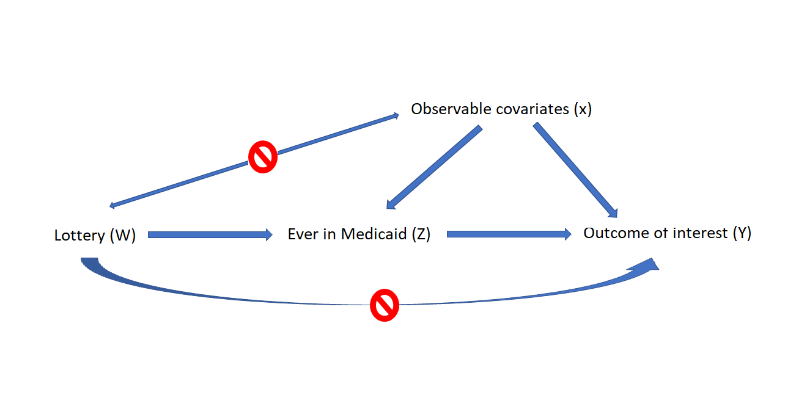
Methods
- Cluster-robust random forest of the Wager and Athey (2018).
Efficient policy learning strategies Athey and Wager (2019).
Classification and Regression Tree (CART);
Causal Treesof Athey and Imbense (2016); and Random Forest.
Classification and Regression Tree (CART)
- CART ML recursively filters and partitions the dataset into binary homogeneous sub-groups. 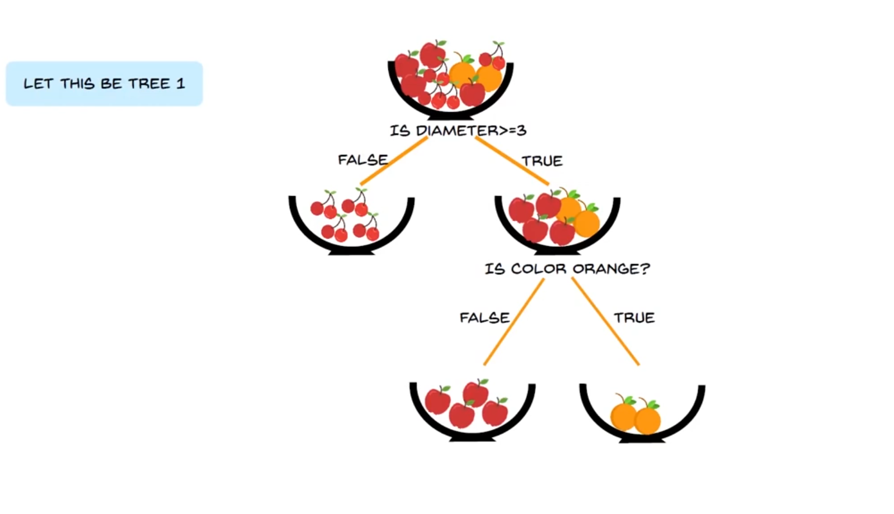
Causal Tree (Athey and Imbens, 2016)
Training dataset that includes $Y$, $W$ and $x$.
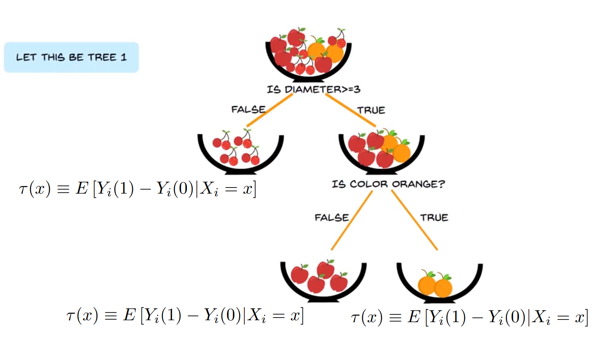
Out-of-sample prediction
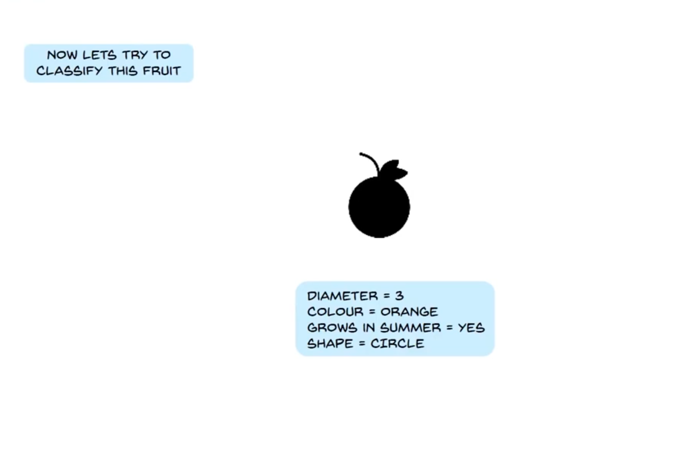
Random Forest
Random Forest
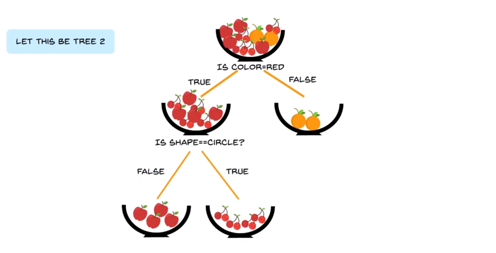
Random Forest
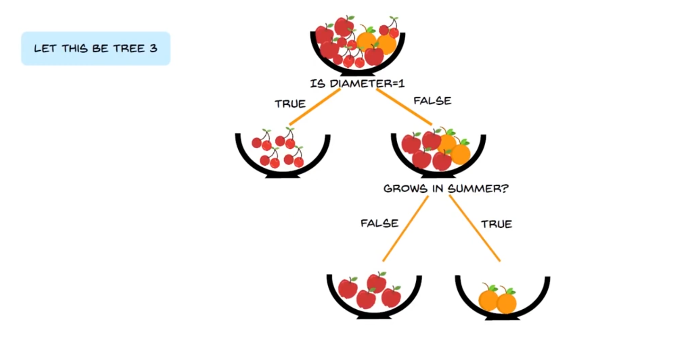
Out-of-sample prediction
Out-of-sample prediction
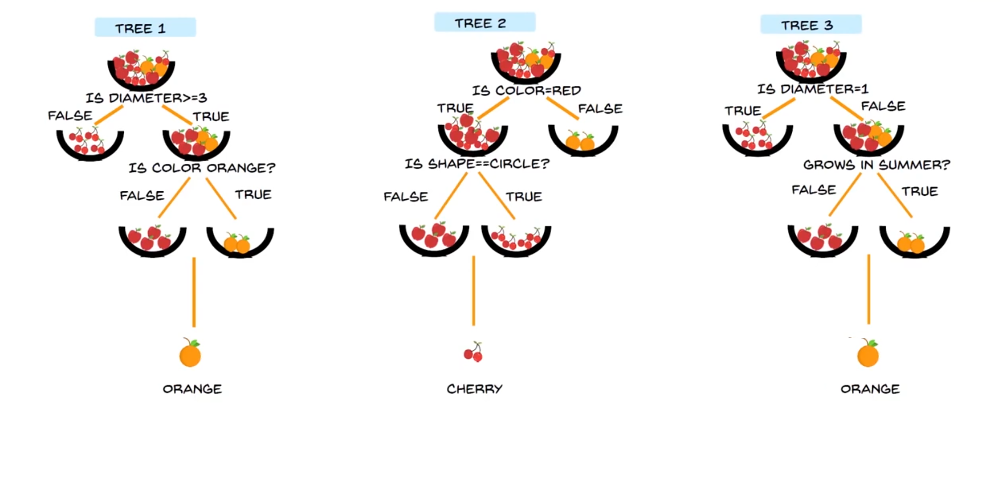
Accessing Treatment Heterogeneties.
Heuristic approach.
Group observation based on CATE (above or below median CATE).
Test if the ATE of these two group are different with each other or not.
This provide at least qualitative insights about the strength of heterogeneity.
Accessing Treatment Heterogeneties.
BLP method by of Chernozhukov et al. (2018)
- Mean Forest Prediction (MFP)
- $B_i = Y_i - \hat{y_i}^{(-i)}$
- $C_i = \bar\tau W_i - \bar\tau \hat{e_i}^{(-i)}$
- $\bar\tau$ is out-of-sample ATE, and $\hat{e_i}^{(-i)}$ is propensity.
- $\frac{dB_i}{dC_i}=1$, for calibrated model.
Accessing Treatment Heterogeneties.
BLP method by of Chernozhukov et al. (2018)
- Differential Forest Prediction (DFP)
- $B_i = Y_i - \hat{y_i}^{(-i)}$ shows residuals.
- $D_i = (\hat\tau^{(-i)}(X_i)-\bar\tau)(W_i - \hat{e_i}^{(-i)})$
- $\frac{dB_i}{dD_i}>0$, for existence of treament heterogeneities.
Recap before Results.
- Intent-to-treat (ITT) shows net-impact of access.
- Local Average Treatment Effect (LATE) shows impact among compliers.
- Conditional Average Treatment Effect (CATE) capture treatment heterogeneities
- Average of CATE is ATE, and ATE = ITT
- Measure of Treatment Heterogeneties: Heuristic*, MFP = 1, and DFP > 0.
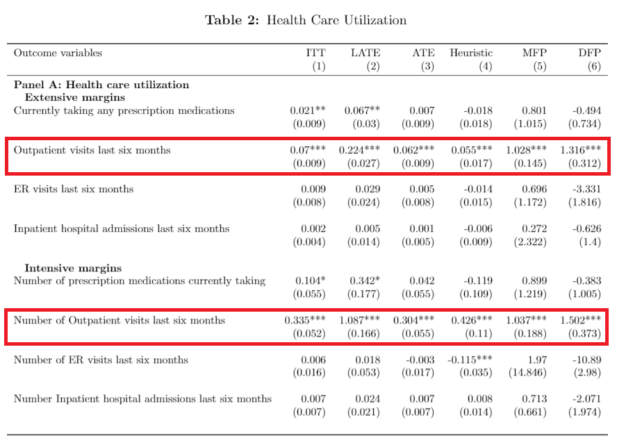
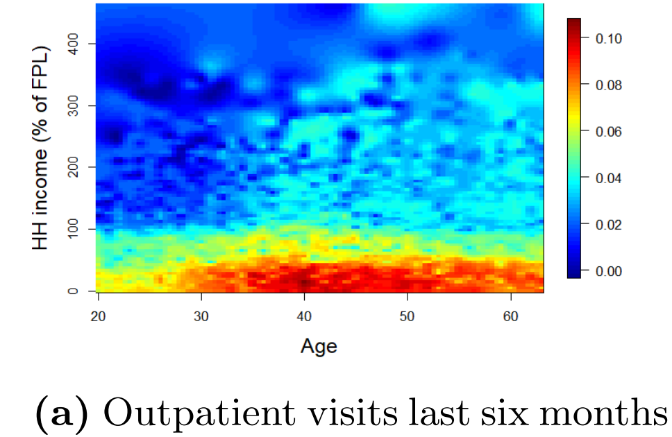


efficient policy learning
- Main idea: intervene those who are more likely to benefit the most.
- Find policy (tree) $\pi $ that maximize expected outcomes.
$$ {{\pi }^{*}}\in \arg \ \underset{\pi \in \prod{{}}}{\mathop{\max }}\,E\left[ {{Y}_{i}}\left( \pi \left( {{X}_{i}} \right) \right) \right] $$
- Any other non-optimal policy experiences regret $R\left( \pi \right)$ so, we would like to minimize the regret function:$ R\left( \pi \right)=E\left[ {{Y}_{i}}\left( {{\pi }^{*}}\left( {{X}_{i}} \right) \right) \right]-E\left[ {{Y}_{i}}\left( \pi \left( {{X}_{i}} \right) \right) \right] $
efficient policy learning
Estimate regret by Q-learning: $ \hat{Q}\left( \pi \right)={{n}^{-1}}\sum\limits_{i}{\pi \left( {{X}_{i}} \right)|{{{\hat{\Gamma }}}_{i}}|sign\left( {{{\hat{\Gamma }}}_{i}} \right)}$
The regret converges as: $\sqrt{n}\left( {{{\hat{R}}}_{DML}}\left( \pi \right)-R\left( \pi \right) \right)\overset{d}{\mathop{\to }}\,N\left( 0,{{\sigma }^{2}}\left( \pi \right) \right)$
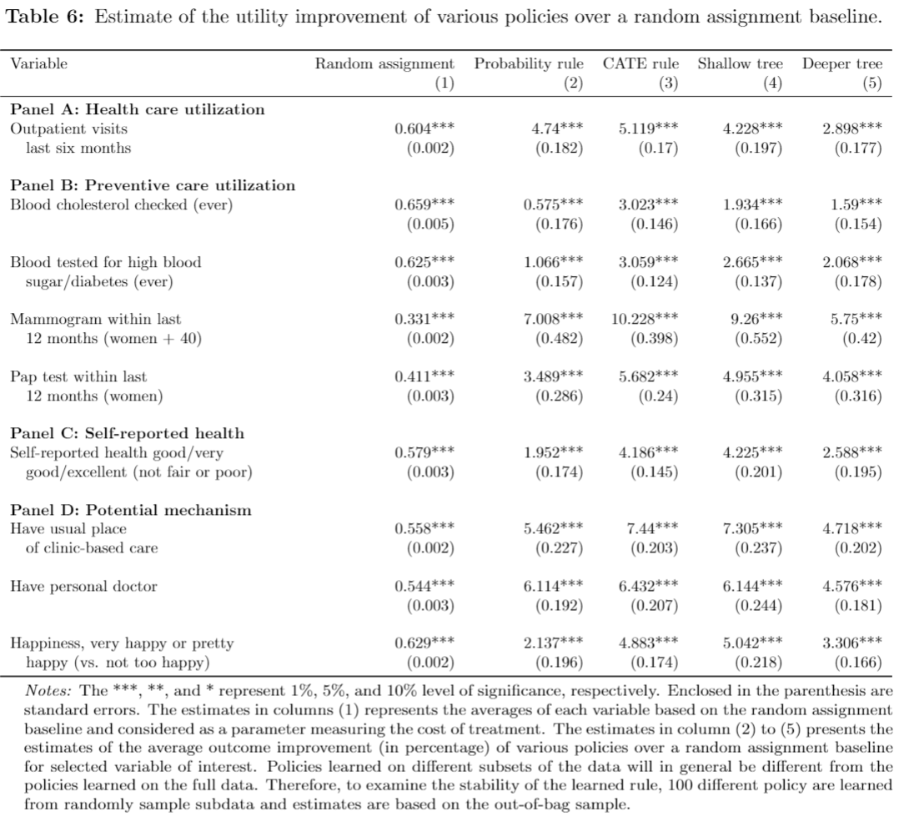
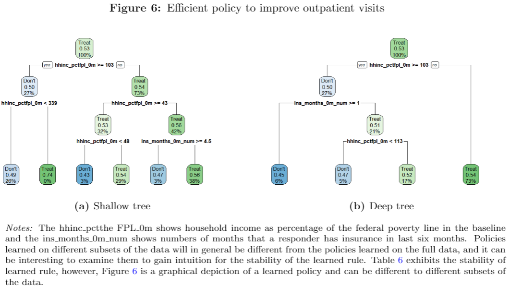
Discussion and Conclusion
Intent-to-treatapproach.Eligibility criteria and not the take-up.
Higher effect among impoverished households.
Standard adverse selection theory.
Exclusion of gender, race and residency variables.
Discussion and Conclusion
Conservative approach of cluster-robust.
Equally weighted observation to generalize.
One-year impact of expanding Medicaid access.
Oregonian population $\neq$ the low-income U.S. adults.
Reforms would improve selected outcome by a range of 2%-9% against random assignment.